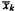
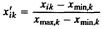
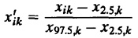
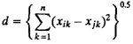
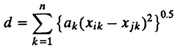
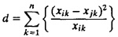
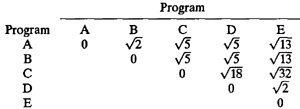
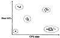

Here  and sk are the measured mean and standard deviation of the kth parameter, respectively.
x'ik = wkxik
| Previous | Table of Contents | Next |
The final results of clustering depend heavily upon relative values and ranges of different parameters. It is therefore generally recommended that the parameter values be scaled so that their relative values and ranges are approximately equal. The four commonly used scaling techniques are as follows:
x'ik = wkxik


Clustering analysis basically consists of mapping each component into an n-dimensional space and identifying components that are close to each other. Here n is the number of parameters. The closeness between two components is measured by defining a distance measure. Three methods that have been used are as follows:



The basic aim of clustering is to partition the components into groups so the members of a group are as similar as possible and different groups are as dissimilar as possible. Statistically, this implies that the intragroup variance should be as small as possible and intergroup variance should be as large as possible. Fortunately, these two goals are redundant in the sense that achieving either one is sufficient. This is because
Total variance = intragroup variance + intergroup variance
Since the total variance is constant, minimizing intragroup variance automatically maximizes intergroup variance.
A number of clustering techniques have been described in the literature. These techniques fall into two classes: hierarchical and nonhierarchical. In nonhierarchical approaches, one starts with an arbitrary set of k clusters, and the members of the clusters are moved until the intragroup variance is minimum. There are two kinds of hierarchical approaches: agglomerative and divisive. In the agglomerative hierarchical approach, given n components, one starts with n clusters (each cluster having one component). Then neighboring clusters are merged successively until the desired number of clusters is obtained. In the divisive hierarchical approach, on the other hand, one starts with one cluster (of n components) and then divides the cluster successively into two, three, and so on, until the desired number of clusters is obtained. A popular technique known as minimum spanning tree method is described next.
This is an agglomerative hierarchical clustering technique, which starts with n clusters of one component each and successively joins the nearest clusters:
Example 6.3 illustrates these steps.
Example 6.3 Consider a workload with five components and two parameters. The CPU time and the number of disk I/O’s were measured for five programs. Tbe parameter values after scaling are as shown in Table 6.6.
| TABLE 6.6 Data for Clustering Example 6.3 | ||
|---|---|---|
| Program | CPU Time | Disk I/O |
| A | 2 | 4 |
| B | 3 | 5 |
| C | 1 | 6 |
| D | 4 | 3 |
| E | 5 | 2 |


FIGURE 6.6 Clustering example.
| Previous | Table of Contents | Next |
){kind=link}
){kind=link}